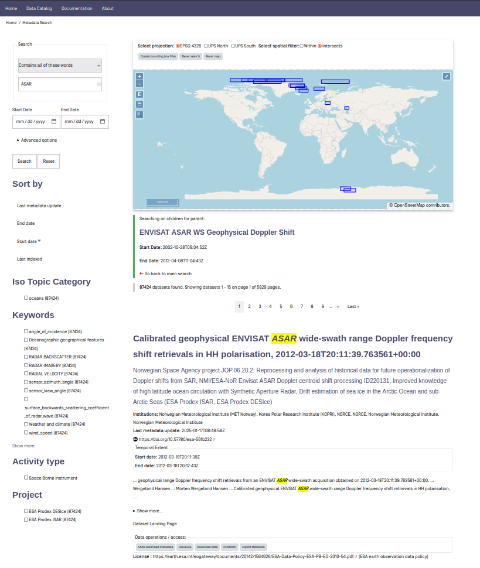
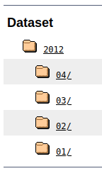

2. Find and Access Data#
There are several ways to find and access the SAR datasets. These datasets contain the calibrated geophysical range Doppler frequency shift retrievals from the ENVISAT ASAR wide-swath acquisitions obtained between 2002 and 2012. Below is a description of some selected methods for finding and extracting these datasets.
2.1. Find Data Through data.met.no#
By using data.met.no, it is possible to both find and visualise datasets. The web search interface can be accessed from the “Data Catalog” menu item, or directly at data.met.no. As seen below, the search interface consists of a map and a series of filters.
Note: The image below showcases a staging site, which can be ignored. The Data Catalog at data-staging.met.no (MET Norway staging site) has the same functionalities.

The map provides a pagination of available datasets in the metadata catalog [max/min longitude/latitude rectangle], sorted to showcase the latest additions first. You can interact with the map to better display the results and perform data searches.
2.1.1. Map Features#
Select Projection: Located just above the map, this can be altered to change the map projection. The “Spatial filter” can be set to both “Within” and “Intersects”.
Create Bounding Box: This button enables setting a bounding box directly on the map and works as a filter on the results.
Reset Search: Clears the filters and starts a new search.
Reset Map: Resets the map.
2.1.2. Map Widgets#
These allow direct interaction with the map:
+/-: Zoom in/out.
E: Zooms to the extent of the displayed datasets.
Menu Tag: Opens a side panel where WMS Layers, Features, and Base Layers can be altered.
Magnifying Glass: Enables searching for location names.
‘>>’: Shows the location in an overview world map.
Upper Right-Hand Widget: Full screen mode.
2.1.3. Search Filters#
Search filters can also be used to find the desired datasets. The results are updated dynamically when filters are selected. These include:
Full Text Search: Options “Contains all of these words” and “Contains any of these words” are available.
Start and End Date: For the desired datasets.
Sorting Mechanism: Options include Last metadata update, End date, Start date, Last indexed.
Iso Topic Categories: General subjects for which the geospatial data may be relevant, as defined by the ISO standard.
Keywords: Keywords from a controlled vocabulary.
Activity Type: The nature of the dataset(s) generation process (Numerical Simulation, Climate Indicator, In Situ Land-based station, Space Borne Instrument).
Project: Datasets related to a certain project.
By clicking the “Reset” button, all filters are removed, and a new search can be initiated.
2.2. Visualise Data Through data.met.no#
To further visualise the data, simply click on “Child data..” under “Data operations / access:” for one of the parent datasets that correspond to the search criteria (as seen towards the bottom of the image above). In this example, there is just one parent dataset that corresponds to the search criteria.
The list of children within this parent dataset is then listed. The bounding boxes corresponding to the different datasets will now be visible on the map. By clicking on a bounding box, the corresponding dataset is singled out on top of the list of datasets.

Changing the projection of the map might also make it easier to visualise the extent and location of the different boundary boxes:

To visualise the data, click on the “Visualise” option under “Data operations / access:” on a desired dataset. This option is visibly available at the bottom of the two images above. A close-up of the area in question will then show up. Two clickable image examples are shown below (click on these to visualise the datasets on data.met.no yourself):


To visualise one specific variable of the dataset, e.g., the geophysical Doppler, click on the menu tab up towards the top left-hand corner. Choose “raster” as the WMS style, and select your desired variable. Below, the geophysical Doppler is shown for the two examples above. The upper one shows an image from the Gulf Stream, and the lower one shows a part of the Agulhas Current close to the Cape of Good Hope off the coast of South Africa:
Note: Bear in mind that it might take a bit of time for the visualisation tool to finish the visualisation.

2.3. Access Datasets Through data.met.no#
While the visualisation tool of data.met.no is showcased above, there are several other options to get information and access the different datasets available at data.met.no. Below, we take a step back and look at a random dataset using some of these procedures:

In addition to the visualisation option (“Visualise”), it is also possible to:
Download Data: This is equivalent to clicking on an HTTPServer link to download datasets locally.
Access OPeNDAP: The OPeNDAP link (see OPeNDAP explanation below) is available, along with extensive metadata information.
Show Extended Metadata: Clicking this option will display a right-hand side menu of metadata information. In this menu, the options available under “Data operations / access” can also be found.
Export Metadata: This option allows exporting metadata. When clicking this option, it is possible to choose between DIF, Inspire, and ISO-Norge-Inspire formats.
As an alternative to accessing the extended metadata, it is also possible to visit the dataset landing page. This is done by clicking on “Dataset Landing Page” or on the dataset title itself. The dataset landing page contains all the information and accessibility options that the “fast track” options above offer.
2.4. Access Datasets Through thredds.met.no#
All data is freely available, and some of it can be found in the MET Norway Thredds catalog: thredds.met.no.

The ENVISAT ASAR datasets are located at: thredds.met.no/thredds/catalog/remotesensingenvisat/asar-doppler/catalog.html.
Alternatively, you can follow this folder structure: Observations/Remotesensing_archive/ENVISAT_ASAR_Doppler.

Entering the subfolder, each individual netCDF file is found under separate pathways depending on their respective dates. To access the files for a specific date, the datasets are listed with the following structure: YEAR/MONTH/DAY.
Below is an example path to the datasets for January 27, 2012:
 Figure 1: Overview of ASAR datasets for the year 2012.
 Figure 2: Overview of ASAR datasets for January 2012.
Figure 2: Overview of ASAR datasets for January 2012.
 Figure 3: Overview of ASAR datasets for January 27, 2012.
Figure 3: Overview of ASAR datasets for January 27, 2012.
The entire list of files from the specified date is then accessible (the list goes on).
Upon accessing a specific netCDF file, four different “Access” options are available: “OPENDAP”, “HTTPServer”, “WCS”, and “WMS”.

In the following, the use of “OPENDAP” is explained in detail. This is an easy and efficient way of accessing data. In the examples below, the netCDF file “ASA_WSDV2PRNMI20120127_215005_000614583111_00101_51839_0000.nc” (the uppermost file under 2012/01/27) is used as an example.
2.5. How to Open Datasets#
2.5.1. OPENDAP - Using xarray:#
The data is easily accessed through OPENDAP by using the xarray Python package. Below is an example of how to use xarray to open and investigate a desired dataset. This procedure makes it easy to inspect the Dimensions, Coordinates, Data Variables, Indexes, and Attributes of the dataset in question.
# Import the required package: xarray
import xarray as xr
''' The backslashes serve as line shifts '''
# Providing the OPENDAP-url
OPENDAP_url = '''https://thredds.met.no/thredds/dodsC\
/remotesensingenvisat/asar-doppler/2012/01/27/\
ASA_WSDV2PRNMI20120127_215005_000612433111_00101\
_51839_0000.nc'''
# Using xarray to open the dataset using the OPENDAP URL
ds = xr.open_dataset(OPENDAP_url)
# Investigating the metadata as an xarray.Dataset
ds
<xarray.Dataset> Size: 45MB
Dimensions: (y: 602, x: 851, zero_doppler_time: 602)
Coordinates:
* zero_doppler_time (zero_doppler_time) datetime64[ns] 5kB 2012-01-...
Dimensions without coordinates: y, x
Data variables: (12/23)
sensor_view_angle (y, x) float32 2MB ...
sigma0 (y, x) float32 2MB ...
subswath_number (y, x) float32 2MB ...
incidence_angle (y, x) float32 2MB ...
sensor_azimuth (y, x) float32 2MB ...
dc (y, x) float32 2MB ...
... ...
geophysical_doppler (y, x) float32 2MB ...
ground_range_current (y, x) float32 2MB ...
std_ground_range_current (y, x) float32 2MB ...
longitude (y, x) float32 2MB ...
latitude (y, x) float32 2MB ...
crs int32 4B ...
Attributes: (12/60)
GDAL: GDAL 3.2.1, released 2020/12/29
acknowledgement: GSAR IDL pre-processing software was develope...
azimuth_start_time: 2012-01-27T21:50:05.173597
contributor_email: jeong-won.park@kopri.re.kr, hjoh@norceresearc...
contributor_institution: Korea Polar Research Institute (KOPRI), NORCE...
contributor_name: Jeong-Won Park, Harald Johnsen, Geir Engen, M...
... ...
time_coverage_end: 2012-01-27T21:51:07.925870+00:00
time_coverage_start: 2012-01-27T21:50:04.077748+00:00
title: Calibrated geophysical ENVISAT ASAR wide-swat...
title_lang: en
summary_no: Kalibrert geofysisk Dopplerskift fra ENVISAT ...
title_no: Kalibrert geofysisk ENVISAT ASAR Dopplerskift...2.5.2. HTTPServer (Download) - Using xarray:#
As an alternative to using the OPENDAP link, the dataset can also be downloaded. On data.met.no, this is done by clicking the download option on each specific dataset or by clicking the HTTPServer link on the landing page of each dataset. The latter is also the case when wanting to download the data from thredds.met.no (click on the HTTPServer link). Using the path to the downloaded dataset, it is possible to proceed just as in the above example.
Note: The downloaded example dataset is placed in the current notebooks folder.
# Import the required package: xarray
import xarray as xr
''' The backslashes serves as line shifts '''
# Providing the path to the downloaded dataset
dataset_path = '''ASA_WSDV2PRNMI20120127\
_215005_000612433111\
_00101_51839_0000.nc'''
# Using xarray to open the dataset using the dataset path
ds = xr.open_dataset(dataset_path)
# Investigating the metadata as an xarray.Dataset
ds
<xarray.Dataset> Size: 45MB
Dimensions: (y: 602, x: 851, zero_doppler_time: 602)
Coordinates:
* zero_doppler_time (zero_doppler_time) datetime64[ns] 5kB 2012-01-...
Dimensions without coordinates: y, x
Data variables: (12/23)
sensor_view_angle (y, x) float32 2MB ...
sigma0 (y, x) float32 2MB ...
subswath_number (y, x) float32 2MB ...
incidence_angle (y, x) float32 2MB ...
sensor_azimuth (y, x) float32 2MB ...
dc (y, x) float32 2MB ...
... ...
geophysical_doppler (y, x) float32 2MB ...
ground_range_current (y, x) float32 2MB ...
std_ground_range_current (y, x) float32 2MB ...
longitude (y, x) float32 2MB ...
latitude (y, x) float32 2MB ...
crs int32 4B ...
Attributes: (12/60)
GDAL: GDAL 3.2.1, released 2020/12/29
acknowledgement: GSAR IDL pre-processing software was develope...
azimuth_start_time: 2012-01-27T21:50:05.173597
contributor_email: jeong-won.park@kopri.re.kr, hjoh@norceresearc...
contributor_institution: Korea Polar Research Institute (KOPRI), NORCE...
contributor_name: Jeong-Won Park, Harald Johnsen, Geir Engen, M...
... ...
time_coverage_end: 2012-01-27T21:51:07.925870+00:00
time_coverage_start: 2012-01-27T21:50:04.077748+00:00
title: Calibrated geophysical ENVISAT ASAR wide-swat...
title_lang: en
summary_no: Kalibrert geofysisk Dopplerskift fra ENVISAT ...
title_no: Kalibrert geofysisk ENVISAT ASAR Dopplerskift...2.6. Find Data Through CSW (Catalog Service on the Web)#
Data can also be found through CSW (Catalog Service on the Web). An efficient and practical function to extract data that satisfies certain conditions can be found here. Below is an example of how to import the required function from its folder and how to use it. The SearchCSW function takes the following arguments:
time: This is a specific
datetime.datetimeto set as a starting point. Default is “now” (time = datetime.datetime.now(timezone("utc"))), i.e., the time at each individual execution of the function.
dt: The time interval to search within. Depending on what “time” is selected, the search will highlight datasets which span from
(time - dt)up to(time + dt). Default isdt = 24.
text: A certain part of the dataset title to be served as a string. Default is
text = None.
boundary_box: A geographically bounded box for which the desired datasets only need to intersect. It is structured as follows:
[Westernmost Longitude, Southernmost Latitude, Easternmost Longitude, Northernmost Latitude]. Values are in degrees east and degrees north. Default spans the entire globe[-180, -90, 180, 90].
endpoint: The endpoint to search through.
Note: There are provided two endpoints below. Before the SAR data is made publicly available at data.csw.met.no, the staging site csw.s-enda-staging.k8s.met.no is used. The latter is however only accessible to MET Norway employees. Others will have to switch to the publicly available endpoint (data.csw.met.no).
from fadg.find_and_collocate import SearchCSW
from datetime import datetime, timedelta
# Time and dt
time_str = '2012-02-14 00:00:00' # Valid datetime string
# for the SearchCSW
# function. Default is
# the current time.
time = datetime.strptime(time_str, '%Y-%m-%d %H:%M:%S')
dt = 24 # Total time interval in hours
# before and after the given time
# (centered around the selected time).
print(f'Finding data within the timespan of:')
print(f'\n {time - timedelta(hours=dt)}')
print(' and ')
print(f' {time + timedelta(hours=dt)}\n')
# Text
text = "Doppler" # This text string needs to
# be part of the title of the
# files to be found.
print(f'Finding data with titles containing: "{text}".\n')
# Boundary Box
boundary_box = [34.9, 80.9, 35.1, 81] # This boundary box
# only needs to be
# intersected by the
# geographical extent
# of the desired
# datasets.
print('Finding data intersected by this specified boundary box:')
print(f'\n {boundary_box}\n')
#Endpoint
# endpoint = "https://data.csw.met.no" # The endpoint to use
# when data is made
# publicly available
endpoint = "https://csw.s-enda-staging.k8s.met.no"
# Endpoint used in the
# original version
# - only accessible
# internally at MET
# Norway
print("Searching for data with endpoint set to:")
print(f'\n {endpoint}\n')
# Finding the corresponding datasets
sar = SearchCSW(time = time,
dt = dt,
text = text,
bbox = boundary_box,
endpoint = endpoint
)
# How many files are found
if len(sar.urls) == 0:
print('No data match the chosen credentials...')
elif len(sar.urls) == 1:
print(f'\nThere is {len(sar.urls)} file which \
match the chosen credentials!')
else:
print(f'\nThere are {len(sar.urls)} files which \
match the chosen credentials!\n')
# Provide the found URLs
sar.urls.sort() # Sorts the list of files
print('These are the Opendap URLs of the datasets which \
match the chosen credentials:')
sar.urls
Finding data within the timespan of:
2012-02-13 00:00:00
and
2012-02-15 00:00:00
Finding data with titles containing: "Doppler".
Finding data intersected by this specified boundary box:
[34.9, 80.9, 35.1, 81]
Searching for data with endpoint set to:
https://csw.s-enda-staging.k8s.met.no
There are 9 files which match the chosen credentials!
These are the Opendap URLs of the datasets which match the chosen credentials:
['https://thredds.met.no/thredds/dodsC/remotesensingenvisat/asar-doppler/2012/02/13/ASA_WSDH2PRNMI20120213_092838_000598223111_00338_52076_0000.nc',
'https://thredds.met.no/thredds/dodsC/remotesensingenvisat/asar-doppler/2012/02/13/ASA_WSDH2PRNMI20120213_092845_000623643111_00338_52076_0000.nc',
'https://thredds.met.no/thredds/dodsC/remotesensingenvisat/asar-doppler/2012/02/13/ASA_WSDH2PRNMI20120213_110858_000624013111_00339_52077_0000.nc',
'https://thredds.met.no/thredds/dodsC/remotesensingenvisat/asar-doppler/2012/02/13/ASA_WSDH2PRNMI20120213_160639_000623503111_00342_52080_0000.nc',
'https://thredds.met.no/thredds/dodsC/remotesensingenvisat/asar-doppler/2012/02/13/ASA_WSDH2PRNMI20120213_174605_000602333111_00343_52081_0000.nc',
'https://thredds.met.no/thredds/dodsC/remotesensingenvisat/asar-doppler/2012/02/13/ASA_WSDH2PRNMI20120213_174653_000621993111_00343_52081_0000.nc',
'https://thredds.met.no/thredds/dodsC/remotesensingenvisat/asar-doppler/2012/02/14/ASA_WSDH2PRNMI20120214_103237_000601593111_00353_52091_0000.nc',
'https://thredds.met.no/thredds/dodsC/remotesensingenvisat/asar-doppler/2012/02/14/ASA_WSDH2PRNMI20120214_170908_000623603111_00357_52095_0000.nc',
'https://thredds.met.no/thredds/dodsC/remotesensingenvisat/asar-doppler/2012/02/14/ASA_WSDH2PRNMI20120214_171008_000624093111_00357_52095_0000.nc']
2.6.1. Get Parent Datasets and their Children (or Dataset Series in ISO 19115) with OGC CSW#
Change identifier when no longer on the staging site - 5 ALTERATIONS REQUIRED!
Change endpoint (in all links) when data is available on data.met.no:
https://csw.s-enda-staging.k8s.met.no–>https://data.csw.met.no.
MET Norway organises datasets in parent-child relationships. A parent can be a set of Calibrated geophysical ENVISAT ASAR wide-swath range Doppler frequency shift retrievals, where the hyperlink provides the OGC CSW result of a search for “ASAR”.
The same search but with results provided in ISO format: ISO search results.
Here, the field gmd:parentIdentifier provides the metadata identification of the parent dataset, i.e., no.met.staging:e19b9c36-a9dc-4e13-8827-c998b9045b54.
Note: If this document is opened as a PDF, all the links below will be incomplete. To see full links below open the document as a HTML or a jupyter notebook.
Get the parent dataset:
https://csw.s-enda-staging.k8s.met.no/csw?service=CSW&version=2.0.2&request=GetRepositoryItem&id=no.met.staging:e19b9c36-a9dc-4e13-8827-c998b9045b54
CHANGE HERE
Get all its children:
https://csw.s-enda-staging.k8s.met.no/csw?SERVICE=CSW&VERSION=2.0.2&REQUEST=GetRecords&RESULTTYPE=results&TYPENAMES=csw:Record&ElementSetName=full&outputFormat=application%2Fxml&outputschema=http://www.isotc211.org/2005/gmd&CONSTRAINTLANGUAGE=CQL_TEXT&CONSTRAINT=apiso:ParentIdentifier%20like%20%27no.met.staging:e19b9c36-a9dc-4e13-8827-c998b9045b54.
CHANGE HERE
To find all parent datasets:
https://csw.s-enda-staging.k8s.met.no/csw?SERVICE=CSW&VERSION=2.0.2&REQUEST=GetRecords&RESULTTYPE=results&TYPENAMES=csw:Record&ElementSetName=full&outputschema=http://www.isotc211.org/2005/gmd&CONSTRAINTLANGUAGE=CQL_TEXT&CONSTRAINT=dc:type%20like%20%27series%27.
2.6.2. Find Data with OpenSearch#
Need to change the endpoint of all links below: https://csw.s-enda-staging.k8s.met.no… –> https://data.csw.met.no…
OpenSearch is a way for websites and search engines to publish search results in a standard and accessible format.
To find all datasets in the catalogue (Note: To see full links below open the page as a HTML or a jupyter notebook):
https://csw.s-enda-staging.k8s.met.no/?mode=opensearch&service=CSW&version=2.0.2&request=GetRecords&elementsetname=full&typenames=csw:Record&resulttype=results
Or datasets within a given time span (for instance: from 2012-02-01 to 2012-02-05):
https://csw.s-enda-staging.k8s.met.no/?mode=opensearch&service=CSW&version=2.0.2&request=GetRecords&elementsetname=full&typenames=csw:Record&resulttype=results&time=2012-02-01/2012-02-05
Or datasets within a geographical domain (defined as a box with parameters min_longitude, min_latitude, max_longitude, max_latitude - for instance [0, 70, 10, 80]):
https://csw.s-enda-staging.k8s.met.no/?mode=opensearch&service=CSW&version=2.0.2&request=GetRecords&elementsetname=full&typenames=csw:Record&resulttype=results&bbox=0,70,10,80
Or datasets with “ENVISAT ASAR wide-swath range Doppler frequency shift” in the title:
https://csw.s-enda-staging.k8s.met.no/?mode=opensearch&service=CSW&version=2.0.2&request=GetRecords&elementsetname=full&typenames=csw:Record&resulttype=results&q=ENVISAT\\%20ASAR\\%20wide-swath\\%20range\\%20Doppler\\%20frequency\\%20shift
Or datasets with all the three spesifications above:
https://csw.s-enda-staging.k8s.met.no/?mode=opensearch&service=CSW&version=2.0.2&request=GetRecords&elementsetname=full&typenames=csw:Record&resulttype=results&time=2012-01-01/2012-03-01&bbox=0,70,10,80&q=ENVISAT\\%20ASAR\\%20wide-swath\\%20range\\%20Doppler\\%20frequency\\%20shift
2.6.3. More Advanced Geographical Search with OGC CSW#
PyCSW OpenSearch only supports geographical searches querying for a box. For more advanced geographical searches, one must write specific XML files.
The XML files listed below are also available in the current notebook’s folder. They are visible in their entirety if this document is opened as a HTML or as a Jupyter notebook.
Here are some examples:
2.6.3.1. To Find All Datasets Containing a Point:#
XML file name:
my_xml_request_containing_a_point.xmlCoordinates: 59.0 degrees north and 4.0 degrees east
<?xml version="1.0" encoding="ISO-8859-1" standalone="no"?>
<csw:GetRecords
xmlns:csw="http://www.opengis.net/cat/csw/2.0.2"
xmlns:ogc="http://www.opengis.net/ogc"
xmlns:gml="http://www.opengis.net/gml"
xmlns:xsi="http://www.w3.org/2001/XMLSchema-instance"
service="CSW"
version="2.0.2"
resultType="results"
maxRecords="10"
outputFormat="application/xml"
outputSchema="http://www.opengis.net/cat/csw/2.0.2"
xsi:schemaLocation="http://www.opengis.net/cat/csw/2.0.2 http://schemas.opengis.net/csw/2.0.2/CSW-discovery.xsd" >
<csw:Query typeNames="csw:Record">
<csw:ElementSetName>full</csw:ElementSetName>
<csw:Constraint version="1.1.0">
<ogc:Filter>
<ogc:Contains>
<ogc:PropertyName>ows:BoundingBox</ogc:PropertyName>
<gml:Point>
<gml:pos srsDimension="2">59.0 4.0</gml:pos>
</gml:Point>
</ogc:Contains>
</ogc:Filter>
</csw:Constraint>
</csw:Query>
</csw:GetRecords>
2.6.3.2. To Find All Datasets Intersecting a Polygon:#
XML file name:
my_xml_request_intersecting_a_polygon.xmlPolygon coordinates: [-5.00, -47.00, 20.00, 55.00]
Note: The first and last coupled coordinate is the same to close the polygon.
<?xml version="1.0" encoding="ISO-8859-1" standalone="no"?>
<csw:GetRecords
xmlns:csw="http://www.opengis.net/cat/csw/2.0.2"
xmlns:gml="http://www.opengis.net/gml"
xmlns:ogc="http://www.opengis.net/ogc"
xmlns:xsi="http://www.w3.org/2001/XMLSchema-instance"
service="CSW"
version="2.0.2"
resultType="results"
maxRecords="10"
outputFormat="application/xml"
outputSchema="http://www.opengis.net/cat/csw/2.0.2"
xsi:schemaLocation="http://www.opengis.net/cat/csw/2.0.2 http://schemas.opengis.net/csw/2.0.2/CSW-discovery.xsd" >
<csw:Query typeNames="csw:Record">
<csw:ElementSetName>full</csw:ElementSetName>
<csw:Constraint version="1.1.0">
<ogc:Filter>
<ogc:Intersects>
<ogc:PropertyName>ows:BoundingBox</ogc:PropertyName>
<gml:Polygon>
<gml:exterior>
<gml:LinearRing>
<gml:posList>
47.00 -5.00 55.00 -5.00 55.00 20.00 47.00 20.00 47.00 -5.00
</gml:posList>
</gml:LinearRing>
</gml:exterior>
</gml:Polygon>
</ogc:Intersects>
</ogc:Filter>
</csw:Constraint>
</csw:Query>
</csw:GetRecords>
2.6.3.3. To Find All Datasets Intersecting a Polygon Within a Given Time Span:#
XML file name:
my_xml_request_intersecting_a_polygon_within_a_given_time_span.xmlPolygon coordinates: [-10.00, 70.00, 10.00, 80.00]
Note: The first and last coupled coordinate is the same to close the polygon.
Start time: 2018-01-01 00:00
End time: 2022-01-01 00:00
<?xml version="1.0" encoding="ISO-8859-1" standalone="no"?>
<csw:GetRecords
xmlns:csw="http://www.opengis.net/cat/csw/2.0.2"
xmlns:gml="http://www.opengis.net/gml"
xmlns:ogc="http://www.opengis.net/ogc"
xmlns:xsi="http://www.w3.org/2001/XMLSchema-instance"
service="CSW"
version="2.0.2"
resultType="results"
maxRecords="100"
outputFormat="application/xml"
outputSchema="http://www.opengis.net/cat/csw/2.0.2"
xsi:schemaLocation="http://www.opengis.net/cat/csw/2.0.2 http://schemas.opengis.net/csw/2.0.2/CSW-discovery.xsd" >
<csw:Query typeNames="csw:Record">
<csw:ElementSetName>summary</csw:ElementSetName>
<csw:Constraint version="1.1.0">
<ogc:Filter>
<ogc:And>
<ogc:Intersects>
<ogc:PropertyName>ows:BoundingBox</ogc:PropertyName>
<gml:Polygon>
<gml:exterior>
<gml:LinearRing>
<gml:posList>
70.00 -10.00 80.00 -10.00 80.00 10.00 70.00 10.00 70.00 -10.00
</gml:posList>
</gml:LinearRing>
</gml:exterior>
</gml:Polygon>
</ogc:Intersects>
<ogc:PropertyIsGreaterThanOrEqualTo>
<ogc:PropertyName>apiso:TempExtent_begin</ogc:PropertyName>
<ogc:Literal>2018-01-01 00:00</ogc:Literal>
</ogc:PropertyIsGreaterThanOrEqualTo>
<ogc:PropertyIsLessThanOrEqualTo>
<ogc:PropertyName>apiso:TempExtent_end</ogc:PropertyName>
<ogc:Literal>2022-01-01 00:00</ogc:Literal>
</ogc:PropertyIsLessThanOrEqualTo>
</ogc:And>
</ogc:Filter>
</csw:Constraint>
</csw:Query>
</csw:GetRecords>
2.6.3.4. To Find All Datasets Intersecting a Polygon Within a Given Time Span and With a Certain Text String:#
XML file name:
my_xml_request_intersecting_a_polygon_within_a_given_time_span_and_certain_text_str.xmlPolygon coordinates: [-10.00, 70.00, 10.00, 80.00]
Note: The first and last coupled coordinate is the same to close the polygon.
Start time: 2012-02-01 00:00
End time: 2012-02-03 00:00
Text string: “ENVISAT ASAR”
<?xml version="1.0" encoding="ISO-8859-1" standalone="no"?>
<csw:GetRecords
xmlns:csw="http://www.opengis.net/cat/csw/2.0.2"
xmlns:gml="http://www.opengis.net/gml"
xmlns:ogc="http://www.opengis.net/ogc"
xmlns:xsi="http://www.w3.org/2001/XMLSchema-instance"
service="CSW"
version="2.0.2"
resultType="results"
maxRecords="100"
outputFormat="application/xml"
outputSchema="http://www.opengis.net/cat/csw/2.0.2"
xsi:schemaLocation="http://www.opengis.net/cat/csw/2.0.2 http://schemas.opengis.net/csw/2.0.2/CSW-discovery.xsd" >
<csw:Query typeNames="csw:Record">
<csw:ElementSetName>summary</csw:ElementSetName>
<csw:Constraint version="1.1.0">
<ogc:Filter>
<ogc:And>
<ogc:Intersects>
<ogc:PropertyName>ows:BoundingBox</ogc:PropertyName>
<gml:Polygon>
<gml:exterior>
<gml:LinearRing>
<gml:posList>
70.00 -10.00 80.00 -10.00 80.00 10.00 70.00 10.00 70.00 -10.00
</gml:posList>
</gml:LinearRing>
</gml:exterior>
</gml:Polygon>
</ogc:Intersects>
<ogc:PropertyIsGreaterThanOrEqualTo>
<ogc:PropertyName>apiso:TempExtent_begin</ogc:PropertyName>
<ogc:Literal>2012-02-01 00:00</ogc:Literal>
</ogc:PropertyIsGreaterThanOrEqualTo>
<ogc:PropertyIsLessThanOrEqualTo>
<ogc:PropertyName>apiso:TempExtent_end</ogc:PropertyName>
<ogc:Literal>2012-02-03 00:00</ogc:Literal>
</ogc:PropertyIsLessThanOrEqualTo>
<ogc:PropertyIsLike wildCard="%" singleChar="_" escapeChar="\\">
<ogc:PropertyName>dc:title</ogc:PropertyName>
<ogc:Literal>%ENVISAT ASAR%</ogc:Literal>
</ogc:PropertyIsLike>
</ogc:And>
</ogc:Filter>
</csw:Constraint>
</csw:Query>
</csw:GetRecords>
2.6.4. Query CSW Endpoint by the Use of Python#
You can query the CSW endpoint and print the response text using Python.
(alter endpoint from https://csw.s-enda-staging.k8s.met.no to https://data.csw.met.no):
import requests
import xarray as xr
import re
import sys
### Define the headers
headers = {'Content-Type': 'application/xml'}
# Specify the XML file to be used for the search
# As mentioned, all the XML files listed above can be found
# in the notebook's folder.
# Uncomment the file you wish to use for the search:
# my_xml_request = 'my_xml_request_containing_a_point.xml'
# my_xml_request = 'my_xml_request_intersecting_a_polygon.xml'
# my_xml_request = 'my_xml_request_intersecting_a_polygon_within_a_given_time_span.xml'
my_xml_request = 'my_xml_request_intersecting_a_polygon_within_a_given_time_span_and_certain_text_str.xml'
# Open and read the XML file
with open(my_xml_request, 'r') as file:
xml_data = file.read()
# Send the POST request
# Change the endpoint from
# 'https://csw.s-enda-staging.k8s.met.no' to
# 'https://data.csw.met.no' when data is publicly available
response = requests.post('https://csw.s-enda-staging.k8s.met.no',
data=xml_data,
headers=headers)
# The response text
print(response.text)
print('\n')
<?xml version="1.0" encoding="UTF-8" standalone="no"?>
<!-- pycsw 2.7.dev0 -->
<csw:GetRecordsResponse xmlns:csw="http://www.opengis.net/cat/csw/2.0.2" xmlns:dc="http://purl.org/dc/elements/1.1/" xmlns:dct="http://purl.org/dc/terms/" xmlns:gmd="http://www.isotc211.org/2005/gmd" xmlns:gml="http://www.opengis.net/gml" xmlns:ows="http://www.opengis.net/ows" xmlns:xs="http://www.w3.org/2001/XMLSchema" xmlns:xsi="http://www.w3.org/2001/XMLSchema-instance" version="2.0.2" xsi:schemaLocation="http://www.opengis.net/cat/csw/2.0.2 http://schemas.opengis.net/csw/2.0.2/CSW-discovery.xsd"><csw:SearchStatus timestamp="2025-03-20T08:20:41Z"/><csw:SearchResults numberOfRecordsMatched="19" numberOfRecordsReturned="10" nextRecord="11" recordSchema="http://www.opengis.net/cat/csw/2.0.2" elementSet="summary"><csw:SummaryRecord><dc:identifier>no.met.staging:4fcf6ffb-0713-48e9-b7c1-d7e9752c7ef8</dc:identifier><dc:title>Calibrated geophysical ENVISAT ASAR wide-swath range Doppler frequency shift retrievals in HH polarisation, 2012-02-01T11:50:02.979539+00:00</dc:title><dc:type>dataset</dc:type><dc:subject>RADAR BACKSCATTER</dc:subject><dc:subject>RADAR IMAGERY</dc:subject><dc:subject>RADIAL VELOCITY</dc:subject><dc:subject>Oceanographic geographical features</dc:subject><dc:subject>Weather and climate</dc:subject><dc:subject>sensor_view_angle</dc:subject><dc:subject>surface_backwards_scattering_coefficient_of_radar_wave</dc:subject><dc:subject>angle_of_incidence</dc:subject><dc:subject>sensor_azimuth_angle</dc:subject><dc:subject>surface_height_above_geopotential_datum</dc:subject><dc:subject>wind_speed</dc:subject><dc:subject scheme="http://www.isotc211.org/2005/resources/Codelist/gmxCodelists.xml#MD_TopicCategoryCode">oceans</dc:subject><dc:format>NetCDF-CF</dc:format><dct:references scheme="OPENDAP:OPENDAP">https://thredds.met.no/thredds/dodsC/remotesensingenvisat/asar-doppler/2012/02/01/ASA_WSDH2PRNMI20120201_115002_000623733111_00167_51905_0000.nc</dct:references><dct:references scheme="OGC:WMS">https://fastapi.s-enda-staging.k8s.met.no/api/get_quicklook/2012/02/01/ASA_WSDH2PRNMI20120201_115002_000623733111_00167_51905_0000.nc?service=WMS&version=1.3.0&request=GetCapabilities</dct:references><dct:references scheme="WWW:DOWNLOAD-1.0-http--download">https://thredds.met.no/thredds/fileServer/remotesensingenvisat/asar-doppler/2012/02/01/ASA_WSDH2PRNMI20120201_115002_000623733111_00167_51905_0000.nc</dct:references><dct:modified>2025-01-14</dct:modified><dct:abstract>Calibrated geophysical range Doppler frequency shift retrievals from an ENVISAT ASAR wide-swath acquisition obtained on 2012-02-01T11:50:02.979539+00:00. The geophysical Doppler shift depends on the ocean wave-state and the sea surface current. In the absence of current, the geophysical Doppler shift is mostly related to the local wind speed and direction. The present dataset is in HH polarization.</dct:abstract><ows:BoundingBox crs="urn:x-ogc:def:crs:EPSG:6.11:4326" dimensions="2"><ows:LowerCorner>77.32 0.07</ows:LowerCorner><ows:UpperCorner>81.04 16.7</ows:UpperCorner></ows:BoundingBox></csw:SummaryRecord><csw:SummaryRecord><dc:identifier>no.met.staging:61bf385b-377f-4328-a12a-9203cba7ade3</dc:identifier><dc:title>Calibrated geophysical ENVISAT ASAR wide-swath range Doppler frequency shift retrievals in HH polarisation, 2012-02-01T18:26:21.902869+00:00</dc:title><dc:type>dataset</dc:type><dc:subject>RADAR BACKSCATTER</dc:subject><dc:subject>RADAR IMAGERY</dc:subject><dc:subject>RADIAL VELOCITY</dc:subject><dc:subject>Oceanographic geographical features</dc:subject><dc:subject>Weather and climate</dc:subject><dc:subject>sensor_view_angle</dc:subject><dc:subject>surface_backwards_scattering_coefficient_of_radar_wave</dc:subject><dc:subject>angle_of_incidence</dc:subject><dc:subject>sensor_azimuth_angle</dc:subject><dc:subject>surface_height_above_geopotential_datum</dc:subject><dc:subject>wind_speed</dc:subject><dc:subject scheme="http://www.isotc211.org/2005/resources/Codelist/gmxCodelists.xml#MD_TopicCategoryCode">oceans</dc:subject><dc:format>NetCDF-CF</dc:format><dct:references scheme="OPENDAP:OPENDAP">https://thredds.met.no/thredds/dodsC/remotesensingenvisat/asar-doppler/2012/02/01/ASA_WSDH2PRNMI20120201_182621_000614713111_00171_51909_0000.nc</dct:references><dct:references scheme="OGC:WMS">https://fastapi.s-enda-staging.k8s.met.no/api/get_quicklook/2012/02/01/ASA_WSDH2PRNMI20120201_182621_000614713111_00171_51909_0000.nc?service=WMS&version=1.3.0&request=GetCapabilities</dct:references><dct:references scheme="WWW:DOWNLOAD-1.0-http--download">https://thredds.met.no/thredds/fileServer/remotesensingenvisat/asar-doppler/2012/02/01/ASA_WSDH2PRNMI20120201_182621_000614713111_00171_51909_0000.nc</dct:references><dct:modified>2025-01-15</dct:modified><dct:abstract>Calibrated geophysical range Doppler frequency shift retrievals from an ENVISAT ASAR wide-swath acquisition obtained on 2012-02-01T18:26:21.902869+00:00. The geophysical Doppler shift depends on the ocean wave-state and the sea surface current. In the absence of current, the geophysical Doppler shift is mostly related to the local wind speed and direction. The present dataset is in HH polarization.</dct:abstract><ows:BoundingBox crs="urn:x-ogc:def:crs:EPSG:6.11:4326" dimensions="2"><ows:LowerCorner>78.62 5.71</ows:LowerCorner><ows:UpperCorner>83.66 37.9</ows:UpperCorner></ows:BoundingBox></csw:SummaryRecord><csw:SummaryRecord><dc:identifier>no.met.staging:6b6eaf37-882b-44e5-b22a-dedbd6599587</dc:identifier><dc:title>Calibrated geophysical ENVISAT ASAR wide-swath range Doppler frequency shift retrievals in HH polarisation, 2012-02-01T20:04:11.724984+00:00</dc:title><dc:type>dataset</dc:type><dc:subject>RADAR BACKSCATTER</dc:subject><dc:subject>RADAR IMAGERY</dc:subject><dc:subject>RADIAL VELOCITY</dc:subject><dc:subject>Oceanographic geographical features</dc:subject><dc:subject>Weather and climate</dc:subject><dc:subject>sensor_view_angle</dc:subject><dc:subject>surface_backwards_scattering_coefficient_of_radar_wave</dc:subject><dc:subject>angle_of_incidence</dc:subject><dc:subject>sensor_azimuth_angle</dc:subject><dc:subject>surface_height_above_geopotential_datum</dc:subject><dc:subject>wind_speed</dc:subject><dc:subject scheme="http://www.isotc211.org/2005/resources/Codelist/gmxCodelists.xml#MD_TopicCategoryCode">oceans</dc:subject><dc:format>NetCDF-CF</dc:format><dct:references scheme="OPENDAP:OPENDAP">https://thredds.met.no/thredds/dodsC/remotesensingenvisat/asar-doppler/2012/02/01/ASA_WSDH2PRNMI20120201_200411_000624103111_00172_51910_0000.nc</dct:references><dct:references scheme="OGC:WMS">https://fastapi.s-enda-staging.k8s.met.no/api/get_quicklook/2012/02/01/ASA_WSDH2PRNMI20120201_200411_000624103111_00172_51910_0000.nc?service=WMS&version=1.3.0&request=GetCapabilities</dct:references><dct:references scheme="WWW:DOWNLOAD-1.0-http--download">https://thredds.met.no/thredds/fileServer/remotesensingenvisat/asar-doppler/2012/02/01/ASA_WSDH2PRNMI20120201_200411_000624103111_00172_51910_0000.nc</dct:references><dct:modified>2025-01-14</dct:modified><dct:abstract>Calibrated geophysical range Doppler frequency shift retrievals from an ENVISAT ASAR wide-swath acquisition obtained on 2012-02-01T20:04:11.724984+00:00. The geophysical Doppler shift depends on the ocean wave-state and the sea surface current. In the absence of current, the geophysical Doppler shift is mostly related to the local wind speed and direction. The present dataset is in HH polarization.</dct:abstract><ows:BoundingBox crs="urn:x-ogc:def:crs:EPSG:6.11:4326" dimensions="2"><ows:LowerCorner>71.0 6.09</ows:LowerCorner><ows:UpperCorner>75.66 22.33</ows:UpperCorner></ows:BoundingBox></csw:SummaryRecord><csw:SummaryRecord><dc:identifier>no.met.staging:f6815b3d-e88b-4f42-9a71-0892ec0f025d</dc:identifier><dc:title>Calibrated geophysical ENVISAT ASAR wide-swath range Doppler frequency shift retrievals in HH polarisation, 2012-02-01T11:52:03.074553+00:00</dc:title><dc:type>dataset</dc:type><dc:subject>RADAR BACKSCATTER</dc:subject><dc:subject>RADAR IMAGERY</dc:subject><dc:subject>RADIAL VELOCITY</dc:subject><dc:subject>Oceanographic geographical features</dc:subject><dc:subject>Weather and climate</dc:subject><dc:subject>sensor_view_angle</dc:subject><dc:subject>surface_backwards_scattering_coefficient_of_radar_wave</dc:subject><dc:subject>angle_of_incidence</dc:subject><dc:subject>sensor_azimuth_angle</dc:subject><dc:subject>surface_height_above_geopotential_datum</dc:subject><dc:subject>wind_speed</dc:subject><dc:subject scheme="http://www.isotc211.org/2005/resources/Codelist/gmxCodelists.xml#MD_TopicCategoryCode">oceans</dc:subject><dc:format>NetCDF-CF</dc:format><dct:references scheme="OPENDAP:OPENDAP">https://thredds.met.no/thredds/dodsC/remotesensingenvisat/asar-doppler/2012/02/01/ASA_WSDH2PRNMI20120201_115203_000633973111_00167_51905_0000.nc</dct:references><dct:references scheme="OGC:WMS">https://fastapi.s-enda-staging.k8s.met.no/api/get_quicklook/2012/02/01/ASA_WSDH2PRNMI20120201_115203_000633973111_00167_51905_0000.nc?service=WMS&version=1.3.0&request=GetCapabilities</dct:references><dct:references scheme="WWW:DOWNLOAD-1.0-http--download">https://thredds.met.no/thredds/fileServer/remotesensingenvisat/asar-doppler/2012/02/01/ASA_WSDH2PRNMI20120201_115203_000633973111_00167_51905_0000.nc</dct:references><dct:modified>2025-01-14</dct:modified><dct:abstract>Calibrated geophysical range Doppler frequency shift retrievals from an ENVISAT ASAR wide-swath acquisition obtained on 2012-02-01T11:52:03.074553+00:00. The geophysical Doppler shift depends on the ocean wave-state and the sea surface current. In the absence of current, the geophysical Doppler shift is mostly related to the local wind speed and direction. The present dataset is in HH polarization.</dct:abstract><ows:BoundingBox crs="urn:x-ogc:def:crs:EPSG:6.11:4326" dimensions="2"><ows:LowerCorner>70.84 -18.28</ows:LowerCorner><ows:UpperCorner>75.55 -2.12</ows:UpperCorner></ows:BoundingBox></csw:SummaryRecord><csw:SummaryRecord><dc:identifier>no.met.staging:0e110d3a-6610-477d-819f-ef97533f1450</dc:identifier><dc:title>Calibrated geophysical ENVISAT ASAR wide-swath range Doppler frequency shift retrievals in HH polarisation, 2012-02-02T11:13:58.985051+00:00</dc:title><dc:type>dataset</dc:type><dc:subject>RADAR BACKSCATTER</dc:subject><dc:subject>RADAR IMAGERY</dc:subject><dc:subject>RADIAL VELOCITY</dc:subject><dc:subject>Oceanographic geographical features</dc:subject><dc:subject>Weather and climate</dc:subject><dc:subject>sensor_view_angle</dc:subject><dc:subject>surface_backwards_scattering_coefficient_of_radar_wave</dc:subject><dc:subject>angle_of_incidence</dc:subject><dc:subject>sensor_azimuth_angle</dc:subject><dc:subject>surface_height_above_geopotential_datum</dc:subject><dc:subject>wind_speed</dc:subject><dc:subject scheme="http://www.isotc211.org/2005/resources/Codelist/gmxCodelists.xml#MD_TopicCategoryCode">oceans</dc:subject><dc:format>NetCDF-CF</dc:format><dct:references scheme="OPENDAP:OPENDAP">https://thredds.met.no/thredds/dodsC/remotesensingenvisat/asar-doppler/2012/02/02/ASA_WSDH2PRNMI20120202_111358_000616673111_00181_51919_0000.nc</dct:references><dct:references scheme="OGC:WMS">https://fastapi.s-enda-staging.k8s.met.no/api/get_quicklook/2012/02/02/ASA_WSDH2PRNMI20120202_111358_000616673111_00181_51919_0000.nc?service=WMS&version=1.3.0&request=GetCapabilities</dct:references><dct:references scheme="WWW:DOWNLOAD-1.0-http--download">https://thredds.met.no/thredds/fileServer/remotesensingenvisat/asar-doppler/2012/02/02/ASA_WSDH2PRNMI20120202_111358_000616673111_00181_51919_0000.nc</dct:references><dct:modified>2025-01-14</dct:modified><dct:abstract>Calibrated geophysical range Doppler frequency shift retrievals from an ENVISAT ASAR wide-swath acquisition obtained on 2012-02-02T11:13:58.985051+00:00. The geophysical Doppler shift depends on the ocean wave-state and the sea surface current. In the absence of current, the geophysical Doppler shift is mostly related to the local wind speed and direction. The present dataset is in HH polarization.</dct:abstract><ows:BoundingBox crs="urn:x-ogc:def:crs:EPSG:6.11:4326" dimensions="2"><ows:LowerCorner>75.25 -5.12</ows:LowerCorner><ows:UpperCorner>80.06 17.42</ows:UpperCorner></ows:BoundingBox></csw:SummaryRecord><csw:SummaryRecord><dc:identifier>no.met.staging:5c89cf75-b770-4072-82e8-9b2d8aab49ca</dc:identifier><dc:title>Calibrated geophysical ENVISAT ASAR wide-swath range Doppler frequency shift retrievals in HH polarisation, 2012-02-02T11:13:18.059767+00:00</dc:title><dc:type>dataset</dc:type><dc:subject>RADAR BACKSCATTER</dc:subject><dc:subject>RADAR IMAGERY</dc:subject><dc:subject>RADIAL VELOCITY</dc:subject><dc:subject>Oceanographic geographical features</dc:subject><dc:subject>Weather and climate</dc:subject><dc:subject>sensor_view_angle</dc:subject><dc:subject>surface_backwards_scattering_coefficient_of_radar_wave</dc:subject><dc:subject>angle_of_incidence</dc:subject><dc:subject>sensor_azimuth_angle</dc:subject><dc:subject>surface_height_above_geopotential_datum</dc:subject><dc:subject>wind_speed</dc:subject><dc:subject scheme="http://www.isotc211.org/2005/resources/Codelist/gmxCodelists.xml#MD_TopicCategoryCode">oceans</dc:subject><dc:format>NetCDF-CF</dc:format><dct:references scheme="OPENDAP:OPENDAP">https://thredds.met.no/thredds/dodsC/remotesensingenvisat/asar-doppler/2012/02/02/ASA_WSDH2PRNMI20120202_111318_000621733111_00181_51919_0000.nc</dct:references><dct:references scheme="OGC:WMS">https://fastapi.s-enda-staging.k8s.met.no/api/get_quicklook/2012/02/02/ASA_WSDH2PRNMI20120202_111318_000621733111_00181_51919_0000.nc?service=WMS&version=1.3.0&request=GetCapabilities</dct:references><dct:references scheme="WWW:DOWNLOAD-1.0-http--download">https://thredds.met.no/thredds/fileServer/remotesensingenvisat/asar-doppler/2012/02/02/ASA_WSDH2PRNMI20120202_111318_000621733111_00181_51919_0000.nc</dct:references><dct:modified>2025-01-14</dct:modified><dct:abstract>Calibrated geophysical range Doppler frequency shift retrievals from an ENVISAT ASAR wide-swath acquisition obtained on 2012-02-02T11:13:18.059767+00:00. The geophysical Doppler shift depends on the ocean wave-state and the sea surface current. In the absence of current, the geophysical Doppler shift is mostly related to the local wind speed and direction. The present dataset is in HH polarization.</dct:abstract><ows:BoundingBox crs="urn:x-ogc:def:crs:EPSG:6.11:4326" dimensions="2"><ows:LowerCorner>77.35 -2.08</ows:LowerCorner><ows:UpperCorner>82.34 25.92</ows:UpperCorner></ows:BoundingBox></csw:SummaryRecord><csw:SummaryRecord><dc:identifier>no.met.staging:b950dbb8-f143-4c30-869a-1cb8e5a0f337</dc:identifier><dc:title>Calibrated geophysical ENVISAT ASAR wide-swath range Doppler frequency shift retrievals in HH polarisation, 2012-02-01T11:49:40.985597+00:00</dc:title><dc:type>dataset</dc:type><dc:subject>RADAR BACKSCATTER</dc:subject><dc:subject>RADAR IMAGERY</dc:subject><dc:subject>RADIAL VELOCITY</dc:subject><dc:subject>Oceanographic geographical features</dc:subject><dc:subject>Weather and climate</dc:subject><dc:subject>sensor_view_angle</dc:subject><dc:subject>surface_backwards_scattering_coefficient_of_radar_wave</dc:subject><dc:subject>angle_of_incidence</dc:subject><dc:subject>sensor_azimuth_angle</dc:subject><dc:subject>surface_height_above_geopotential_datum</dc:subject><dc:subject>wind_speed</dc:subject><dc:subject scheme="http://www.isotc211.org/2005/resources/Codelist/gmxCodelists.xml#MD_TopicCategoryCode">oceans</dc:subject><dc:format>NetCDF-CF</dc:format><dct:references scheme="OPENDAP:OPENDAP">https://thredds.met.no/thredds/dodsC/remotesensingenvisat/asar-doppler/2012/02/01/ASA_WSDH2PRNMI20120201_114940_000603223111_00167_51905_0000.nc</dct:references><dct:references scheme="OGC:WMS">https://fastapi.s-enda-staging.k8s.met.no/api/get_quicklook/2012/02/01/ASA_WSDH2PRNMI20120201_114940_000603223111_00167_51905_0000.nc?service=WMS&version=1.3.0&request=GetCapabilities</dct:references><dct:references scheme="WWW:DOWNLOAD-1.0-http--download">https://thredds.met.no/thredds/fileServer/remotesensingenvisat/asar-doppler/2012/02/01/ASA_WSDH2PRNMI20120201_114940_000603223111_00167_51905_0000.nc</dct:references><dct:modified>2025-01-14</dct:modified><dct:abstract>Calibrated geophysical range Doppler frequency shift retrievals from an ENVISAT ASAR wide-swath acquisition obtained on 2012-02-01T11:49:40.985597+00:00. The geophysical Doppler shift depends on the ocean wave-state and the sea surface current. In the absence of current, the geophysical Doppler shift is mostly related to the local wind speed and direction. The present dataset is in HH polarization.</dct:abstract><ows:BoundingBox crs="urn:x-ogc:def:crs:EPSG:6.11:4326" dimensions="2"><ows:LowerCorner>78.53 -8.88</ows:LowerCorner><ows:UpperCorner>83.5 22.6</ows:UpperCorner></ows:BoundingBox></csw:SummaryRecord><csw:SummaryRecord><dc:identifier>no.met.staging:781a5acf-21f7-4dea-99b7-84385e4820da</dc:identifier><dc:title>Calibrated geophysical ENVISAT ASAR wide-swath range Doppler frequency shift retrievals in HH polarisation, 2012-02-01T11:51:03.024459+00:00</dc:title><dc:type>dataset</dc:type><dc:subject>RADAR BACKSCATTER</dc:subject><dc:subject>RADAR IMAGERY</dc:subject><dc:subject>RADIAL VELOCITY</dc:subject><dc:subject>Oceanographic geographical features</dc:subject><dc:subject>Weather and climate</dc:subject><dc:subject>sensor_view_angle</dc:subject><dc:subject>surface_backwards_scattering_coefficient_of_radar_wave</dc:subject><dc:subject>angle_of_incidence</dc:subject><dc:subject>sensor_azimuth_angle</dc:subject><dc:subject>surface_height_above_geopotential_datum</dc:subject><dc:subject>wind_speed</dc:subject><dc:subject scheme="http://www.isotc211.org/2005/resources/Codelist/gmxCodelists.xml#MD_TopicCategoryCode">oceans</dc:subject><dc:format>NetCDF-CF</dc:format><dct:references scheme="OPENDAP:OPENDAP">https://thredds.met.no/thredds/dodsC/remotesensingenvisat/asar-doppler/2012/02/01/ASA_WSDH2PRNMI20120201_115103_000623783111_00167_51905_0000.nc</dct:references><dct:references scheme="OGC:WMS">https://fastapi.s-enda-staging.k8s.met.no/api/get_quicklook/2012/02/01/ASA_WSDH2PRNMI20120201_115103_000623783111_00167_51905_0000.nc?service=WMS&version=1.3.0&request=GetCapabilities</dct:references><dct:references scheme="WWW:DOWNLOAD-1.0-http--download">https://thredds.met.no/thredds/fileServer/remotesensingenvisat/asar-doppler/2012/02/01/ASA_WSDH2PRNMI20120201_115103_000623783111_00167_51905_0000.nc</dct:references><dct:modified>2025-01-14</dct:modified><dct:abstract>Calibrated geophysical range Doppler frequency shift retrievals from an ENVISAT ASAR wide-swath acquisition obtained on 2012-02-01T11:51:03.024459+00:00. The geophysical Doppler shift depends on the ocean wave-state and the sea surface current. In the absence of current, the geophysical Doppler shift is mostly related to the local wind speed and direction. The present dataset is in HH polarization.</dct:abstract><ows:BoundingBox crs="urn:x-ogc:def:crs:EPSG:6.11:4326" dimensions="2"><ows:LowerCorner>74.19 -15.47</ows:LowerCorner><ows:UpperCorner>78.99 5.16</ows:UpperCorner></ows:BoundingBox></csw:SummaryRecord><csw:SummaryRecord><dc:identifier>no.met.staging:610baead-b270-4de9-bc62-9b81aaf761c1</dc:identifier><dc:title>Calibrated geophysical ENVISAT ASAR wide-swath range Doppler frequency shift retrievals in HH polarisation, 2012-02-01T21:43:39.848958+00:00</dc:title><dc:type>dataset</dc:type><dc:subject>RADAR BACKSCATTER</dc:subject><dc:subject>RADAR IMAGERY</dc:subject><dc:subject>RADIAL VELOCITY</dc:subject><dc:subject>Oceanographic geographical features</dc:subject><dc:subject>Weather and climate</dc:subject><dc:subject>sensor_view_angle</dc:subject><dc:subject>surface_backwards_scattering_coefficient_of_radar_wave</dc:subject><dc:subject>angle_of_incidence</dc:subject><dc:subject>sensor_azimuth_angle</dc:subject><dc:subject>surface_height_above_geopotential_datum</dc:subject><dc:subject>wind_speed</dc:subject><dc:subject scheme="http://www.isotc211.org/2005/resources/Codelist/gmxCodelists.xml#MD_TopicCategoryCode">oceans</dc:subject><dc:format>NetCDF-CF</dc:format><dct:references scheme="OPENDAP:OPENDAP">https://thredds.met.no/thredds/dodsC/remotesensingenvisat/asar-doppler/2012/02/01/ASA_WSDH2PRNMI20120201_214339_000602353111_00173_51911_0000.nc</dct:references><dct:references scheme="OGC:WMS">https://fastapi.s-enda-staging.k8s.met.no/api/get_quicklook/2012/02/01/ASA_WSDH2PRNMI20120201_214339_000602353111_00173_51911_0000.nc?service=WMS&version=1.3.0&request=GetCapabilities</dct:references><dct:references scheme="WWW:DOWNLOAD-1.0-http--download">https://thredds.met.no/thredds/fileServer/remotesensingenvisat/asar-doppler/2012/02/01/ASA_WSDH2PRNMI20120201_214339_000602353111_00173_51911_0000.nc</dct:references><dct:modified>2025-01-15</dct:modified><dct:abstract>Calibrated geophysical range Doppler frequency shift retrievals from an ENVISAT ASAR wide-swath acquisition obtained on 2012-02-01T21:43:39.848958+00:00. The geophysical Doppler shift depends on the ocean wave-state and the sea surface current. In the absence of current, the geophysical Doppler shift is mostly related to the local wind speed and direction. The present dataset is in HH polarization.</dct:abstract><ows:BoundingBox crs="urn:x-ogc:def:crs:EPSG:6.11:4326" dimensions="2"><ows:LowerCorner>68.44 -14.83</ows:LowerCorner><ows:UpperCorner>72.89 -1.13</ows:UpperCorner></ows:BoundingBox></csw:SummaryRecord><csw:SummaryRecord><dc:identifier>no.met.staging:e34b7b10-b0ee-4e5c-904a-d5d465f4f043</dc:identifier><dc:title>Calibrated geophysical ENVISAT ASAR wide-swath range Doppler frequency shift retrievals in HH polarisation, 2012-02-01T21:44:25.733568+00:00</dc:title><dc:type>dataset</dc:type><dc:subject>RADAR BACKSCATTER</dc:subject><dc:subject>RADAR IMAGERY</dc:subject><dc:subject>RADIAL VELOCITY</dc:subject><dc:subject>Oceanographic geographical features</dc:subject><dc:subject>Weather and climate</dc:subject><dc:subject>sensor_view_angle</dc:subject><dc:subject>surface_backwards_scattering_coefficient_of_radar_wave</dc:subject><dc:subject>angle_of_incidence</dc:subject><dc:subject>sensor_azimuth_angle</dc:subject><dc:subject>surface_height_above_geopotential_datum</dc:subject><dc:subject>wind_speed</dc:subject><dc:subject scheme="http://www.isotc211.org/2005/resources/Codelist/gmxCodelists.xml#MD_TopicCategoryCode">oceans</dc:subject><dc:format>NetCDF-CF</dc:format><dct:references scheme="OPENDAP:OPENDAP">https://thredds.met.no/thredds/dodsC/remotesensingenvisat/asar-doppler/2012/02/01/ASA_WSDH2PRNMI20120201_214425_000624153111_00173_51911_0000.nc</dct:references><dct:references scheme="OGC:WMS">https://fastapi.s-enda-staging.k8s.met.no/api/get_quicklook/2012/02/01/ASA_WSDH2PRNMI20120201_214425_000624153111_00173_51911_0000.nc?service=WMS&version=1.3.0&request=GetCapabilities</dct:references><dct:references scheme="WWW:DOWNLOAD-1.0-http--download">https://thredds.met.no/thredds/fileServer/remotesensingenvisat/asar-doppler/2012/02/01/ASA_WSDH2PRNMI20120201_214425_000624153111_00173_51911_0000.nc</dct:references><dct:modified>2025-01-16</dct:modified><dct:abstract>Calibrated geophysical range Doppler frequency shift retrievals from an ENVISAT ASAR wide-swath acquisition obtained on 2012-02-01T21:44:25.733568+00:00. The geophysical Doppler shift depends on the ocean wave-state and the sea surface current. In the absence of current, the geophysical Doppler shift is mostly related to the local wind speed and direction. The present dataset is in HH polarization.</dct:abstract><ows:BoundingBox crs="urn:x-ogc:def:crs:EPSG:6.11:4326" dimensions="2"><ows:LowerCorner>71.01 -18.98</ows:LowerCorner><ows:UpperCorner>75.67 -2.74</ows:UpperCorner></ows:BoundingBox></csw:SummaryRecord></csw:SearchResults></csw:GetRecordsResponse>
2.6.5. Extract the OPENDAP URLs#
After receiving the response text, it is possible to extract the OPENDAP URLs. They can be read directly from the response text, but can also easily be extracted using the code snippet below:
# Pattern to match OPENDAP URLs
# The pattern 'https.*?\.nc(?:ml)?' matches
# "https://thredds.met.no/thredds/dodsC/{regardless_of_what_is_in_between}.ncml"
# where the "ml" ending is included only if found.
pattern = r'https://thredds.met.no/thredds/dodsC/.*?\.nc(?:ml)?'
# Find all non-overlapping matches of the pattern in the response text,
# as a list of strings
opendap_urls = re.findall(pattern, response.text)
# Sort the list of OPENDAP URLs by date and time
opendap_urls.sort()
# List of OPENDAP URLs
print(f'List contains {len(opendap_urls)} URLs:')
for url in opendap_urls:
print(url)
# Check if there are any files - Statement if not
if len(opendap_urls) > 0:
# Open the first dataset in the list of URLs
print('\n')
print("Opening the first dataset with xarray:")
ds = xr.open_dataset(opendap_urls[0])
else:
ds = "No file(s) match the search criteria."
ds
List contains 10 URLs:
https://thredds.met.no/thredds/dodsC/remotesensingenvisat/asar-doppler/2012/02/01/ASA_WSDH2PRNMI20120201_114940_000603223111_00167_51905_0000.nc
https://thredds.met.no/thredds/dodsC/remotesensingenvisat/asar-doppler/2012/02/01/ASA_WSDH2PRNMI20120201_115002_000623733111_00167_51905_0000.nc
https://thredds.met.no/thredds/dodsC/remotesensingenvisat/asar-doppler/2012/02/01/ASA_WSDH2PRNMI20120201_115103_000623783111_00167_51905_0000.nc
https://thredds.met.no/thredds/dodsC/remotesensingenvisat/asar-doppler/2012/02/01/ASA_WSDH2PRNMI20120201_115203_000633973111_00167_51905_0000.nc
https://thredds.met.no/thredds/dodsC/remotesensingenvisat/asar-doppler/2012/02/01/ASA_WSDH2PRNMI20120201_182621_000614713111_00171_51909_0000.nc
https://thredds.met.no/thredds/dodsC/remotesensingenvisat/asar-doppler/2012/02/01/ASA_WSDH2PRNMI20120201_200411_000624103111_00172_51910_0000.nc
https://thredds.met.no/thredds/dodsC/remotesensingenvisat/asar-doppler/2012/02/01/ASA_WSDH2PRNMI20120201_214339_000602353111_00173_51911_0000.nc
https://thredds.met.no/thredds/dodsC/remotesensingenvisat/asar-doppler/2012/02/01/ASA_WSDH2PRNMI20120201_214425_000624153111_00173_51911_0000.nc
https://thredds.met.no/thredds/dodsC/remotesensingenvisat/asar-doppler/2012/02/02/ASA_WSDH2PRNMI20120202_111318_000621733111_00181_51919_0000.nc
https://thredds.met.no/thredds/dodsC/remotesensingenvisat/asar-doppler/2012/02/02/ASA_WSDH2PRNMI20120202_111358_000616673111_00181_51919_0000.nc
Opening the first dataset with xarray:
<xarray.Dataset> Size: 44MB
Dimensions: (y: 591, x: 847, zero_doppler_time: 591)
Coordinates:
* zero_doppler_time (zero_doppler_time) datetime64[ns] 5kB 2012-02-...
Dimensions without coordinates: y, x
Data variables: (12/23)
sensor_view_angle (y, x) float32 2MB ...
sigma0 (y, x) float32 2MB ...
subswath_number (y, x) float32 2MB ...
incidence_angle (y, x) float32 2MB ...
sensor_azimuth (y, x) float32 2MB ...
dc (y, x) float32 2MB ...
... ...
geophysical_doppler (y, x) float32 2MB ...
ground_range_current (y, x) float32 2MB ...
std_ground_range_current (y, x) float32 2MB ...
longitude (y, x) float32 2MB ...
latitude (y, x) float32 2MB ...
crs int32 4B ...
Attributes: (12/60)
GDAL: GDAL 3.2.1, released 2020/12/29
acknowledgement: GSAR IDL pre-processing software was develope...
azimuth_start_time: 2012-02-01T11:49:41.223955
contributor_email: jeong-won.park@kopri.re.kr, hjoh@norceresearc...
contributor_institution: Korea Polar Research Institute (KOPRI), NORCE...
contributor_name: Jeong-Won Park, Harald Johnsen, Geir Engen, M...
... ...
time_coverage_end: 2012-02-01T11:50:42.871897+00:00
time_coverage_start: 2012-02-01T11:49:40.170747+00:00
title: Calibrated geophysical ENVISAT ASAR wide-swat...
title_lang: en
summary_no: Kalibrert geofysisk Dopplerskift fra ENVISAT ...
title_no: Kalibrert geofysisk ENVISAT ASAR Dopplerskift...Note: There seems to be a server-side limit on the number of records returned in a single response, regardless of the “maxRecords” value in the request. It’s not uncommon for servers to have such limits to prevent excessively large responses. Here, this limit appears to be 10 records for every request.
To retrieve the rest of the records, you can make use of the startPosition attribute. By setting startPosition="11", you can retrieve the next set of records starting from the 11th record.
Here’s how you would add it to one of the XML files listed above:
<?xml version="1.0" encoding="ISO-8859-1" standalone="no"?>
<csw:GetRecords
xmlns:csw="http://www.opengis.net/cat/csw/2.0.2"
xmlns:gml="http://www.opengis.net/gml"
xmlns:ogc="http://www.opengis.net/ogc"
xmlns:xsi="http://www.w3.org/2001/XMLSchema-instance"
service="CSW"
version="2.0.2"
resultType="results"
maxRecords="100"
startPosition="11"
outputFormat="application/xml"
outputSchema="http://www.opengis.net/cat/csw/2.0.2"
xsi:schemaLocation="http://www.opengis.net/cat/csw/2.0.2 http://schemas.opengis.net/csw/2.0.2/CSW-discovery.xsd" >
<!-- rest of the XML file -->
</csw:GetRecords>
This way, you can “paginate” through the records by making multiple requests and incrementing startPosition each time.
2.6.6. Query CSW Endpoint by the Use of an HTTP POST (From the Terminal)#
Alternatively, you can use an HTTP POST request to query the PyCSW server directly from the terminal. The steps are as follows:
Make sure that you have one of the listed XML files above saved, or one that you have composed for your search.
Use
curl(a command-line tool for making HTTP requests) to send a POST request to the PyCSW server. An example might look like this (alter endpoint fromhttps://csw.s-enda-staging.k8s.met.notohttps://data.csw.met.no):
### The original bash commands:
'''
%%bash
# curl -X POST -H "Content-Type: application/xml" -d \
# @my_xml_request_intersecting_a_polygon_within_a_given_time_span_and_certain_text_str.xml \
# https://data.csw.met.no
'''
'''
curl -X POST -H "Content-Type: application/xml" -d \
@my_xml_request_intersecting_a_polygon_within_a_given_time_span_and_certain_text_str.xml \
https://csw.s-enda-staging.k8s.met.no
'''
### Using subprocess just to make the output readable when opened as a HTML or PDF:
import subprocess
# Define the curl command
curl_command = [
"curl", "-X", "POST", "-H", "Content-Type: application/xml", "-d",
"@my_xml_request_intersecting_a_polygon_within_a_given_time_span_and_certain_text_str.xml",
"https://csw.s-enda-staging.k8s.met.no"
]
# Run the curl command and capture the output
result = subprocess.run(curl_command, capture_output=True, text=True)
# Print the output
print("Standard Output:\n")
print(result.stdout)
print("\nStandard Error:\n")
print(result.stderr)
Standard Output:
<?xml version="1.0" encoding="UTF-8" standalone="no"?>
<!-- pycsw 2.7.dev0 -->
<csw:GetRecordsResponse xmlns:csw="http://www.opengis.net/cat/csw/2.0.2" xmlns:dc="http://purl.org/dc/elements/1.1/" xmlns:dct="http://purl.org/dc/terms/" xmlns:gmd="http://www.isotc211.org/2005/gmd" xmlns:gml="http://www.opengis.net/gml" xmlns:ows="http://www.opengis.net/ows" xmlns:xs="http://www.w3.org/2001/XMLSchema" xmlns:xsi="http://www.w3.org/2001/XMLSchema-instance" version="2.0.2" xsi:schemaLocation="http://www.opengis.net/cat/csw/2.0.2 http://schemas.opengis.net/csw/2.0.2/CSW-discovery.xsd"><csw:SearchStatus timestamp="2025-03-20T08:20:42Z"/><csw:SearchResults numberOfRecordsMatched="19" numberOfRecordsReturned="10" nextRecord="11" recordSchema="http://www.opengis.net/cat/csw/2.0.2" elementSet="summary"><csw:SummaryRecord><dc:identifier>no.met.staging:4fcf6ffb-0713-48e9-b7c1-d7e9752c7ef8</dc:identifier><dc:title>Calibrated geophysical ENVISAT ASAR wide-swath range Doppler frequency shift retrievals in HH polarisation, 2012-02-01T11:50:02.979539+00:00</dc:title><dc:type>dataset</dc:type><dc:subject>RADAR BACKSCATTER</dc:subject><dc:subject>RADAR IMAGERY</dc:subject><dc:subject>RADIAL VELOCITY</dc:subject><dc:subject>Oceanographic geographical features</dc:subject><dc:subject>Weather and climate</dc:subject><dc:subject>sensor_view_angle</dc:subject><dc:subject>surface_backwards_scattering_coefficient_of_radar_wave</dc:subject><dc:subject>angle_of_incidence</dc:subject><dc:subject>sensor_azimuth_angle</dc:subject><dc:subject>surface_height_above_geopotential_datum</dc:subject><dc:subject>wind_speed</dc:subject><dc:subject scheme="http://www.isotc211.org/2005/resources/Codelist/gmxCodelists.xml#MD_TopicCategoryCode">oceans</dc:subject><dc:format>NetCDF-CF</dc:format><dct:references scheme="OPENDAP:OPENDAP">https://thredds.met.no/thredds/dodsC/remotesensingenvisat/asar-doppler/2012/02/01/ASA_WSDH2PRNMI20120201_115002_000623733111_00167_51905_0000.nc</dct:references><dct:references scheme="OGC:WMS">https://fastapi.s-enda-staging.k8s.met.no/api/get_quicklook/2012/02/01/ASA_WSDH2PRNMI20120201_115002_000623733111_00167_51905_0000.nc?service=WMS&version=1.3.0&request=GetCapabilities</dct:references><dct:references scheme="WWW:DOWNLOAD-1.0-http--download">https://thredds.met.no/thredds/fileServer/remotesensingenvisat/asar-doppler/2012/02/01/ASA_WSDH2PRNMI20120201_115002_000623733111_00167_51905_0000.nc</dct:references><dct:modified>2025-01-14</dct:modified><dct:abstract>Calibrated geophysical range Doppler frequency shift retrievals from an ENVISAT ASAR wide-swath acquisition obtained on 2012-02-01T11:50:02.979539+00:00. The geophysical Doppler shift depends on the ocean wave-state and the sea surface current. In the absence of current, the geophysical Doppler shift is mostly related to the local wind speed and direction. The present dataset is in HH polarization.</dct:abstract><ows:BoundingBox crs="urn:x-ogc:def:crs:EPSG:6.11:4326" dimensions="2"><ows:LowerCorner>77.32 0.07</ows:LowerCorner><ows:UpperCorner>81.04 16.7</ows:UpperCorner></ows:BoundingBox></csw:SummaryRecord><csw:SummaryRecord><dc:identifier>no.met.staging:61bf385b-377f-4328-a12a-9203cba7ade3</dc:identifier><dc:title>Calibrated geophysical ENVISAT ASAR wide-swath range Doppler frequency shift retrievals in HH polarisation, 2012-02-01T18:26:21.902869+00:00</dc:title><dc:type>dataset</dc:type><dc:subject>RADAR BACKSCATTER</dc:subject><dc:subject>RADAR IMAGERY</dc:subject><dc:subject>RADIAL VELOCITY</dc:subject><dc:subject>Oceanographic geographical features</dc:subject><dc:subject>Weather and climate</dc:subject><dc:subject>sensor_view_angle</dc:subject><dc:subject>surface_backwards_scattering_coefficient_of_radar_wave</dc:subject><dc:subject>angle_of_incidence</dc:subject><dc:subject>sensor_azimuth_angle</dc:subject><dc:subject>surface_height_above_geopotential_datum</dc:subject><dc:subject>wind_speed</dc:subject><dc:subject scheme="http://www.isotc211.org/2005/resources/Codelist/gmxCodelists.xml#MD_TopicCategoryCode">oceans</dc:subject><dc:format>NetCDF-CF</dc:format><dct:references scheme="OPENDAP:OPENDAP">https://thredds.met.no/thredds/dodsC/remotesensingenvisat/asar-doppler/2012/02/01/ASA_WSDH2PRNMI20120201_182621_000614713111_00171_51909_0000.nc</dct:references><dct:references scheme="OGC:WMS">https://fastapi.s-enda-staging.k8s.met.no/api/get_quicklook/2012/02/01/ASA_WSDH2PRNMI20120201_182621_000614713111_00171_51909_0000.nc?service=WMS&version=1.3.0&request=GetCapabilities</dct:references><dct:references scheme="WWW:DOWNLOAD-1.0-http--download">https://thredds.met.no/thredds/fileServer/remotesensingenvisat/asar-doppler/2012/02/01/ASA_WSDH2PRNMI20120201_182621_000614713111_00171_51909_0000.nc</dct:references><dct:modified>2025-01-15</dct:modified><dct:abstract>Calibrated geophysical range Doppler frequency shift retrievals from an ENVISAT ASAR wide-swath acquisition obtained on 2012-02-01T18:26:21.902869+00:00. The geophysical Doppler shift depends on the ocean wave-state and the sea surface current. In the absence of current, the geophysical Doppler shift is mostly related to the local wind speed and direction. The present dataset is in HH polarization.</dct:abstract><ows:BoundingBox crs="urn:x-ogc:def:crs:EPSG:6.11:4326" dimensions="2"><ows:LowerCorner>78.62 5.71</ows:LowerCorner><ows:UpperCorner>83.66 37.9</ows:UpperCorner></ows:BoundingBox></csw:SummaryRecord><csw:SummaryRecord><dc:identifier>no.met.staging:6b6eaf37-882b-44e5-b22a-dedbd6599587</dc:identifier><dc:title>Calibrated geophysical ENVISAT ASAR wide-swath range Doppler frequency shift retrievals in HH polarisation, 2012-02-01T20:04:11.724984+00:00</dc:title><dc:type>dataset</dc:type><dc:subject>RADAR BACKSCATTER</dc:subject><dc:subject>RADAR IMAGERY</dc:subject><dc:subject>RADIAL VELOCITY</dc:subject><dc:subject>Oceanographic geographical features</dc:subject><dc:subject>Weather and climate</dc:subject><dc:subject>sensor_view_angle</dc:subject><dc:subject>surface_backwards_scattering_coefficient_of_radar_wave</dc:subject><dc:subject>angle_of_incidence</dc:subject><dc:subject>sensor_azimuth_angle</dc:subject><dc:subject>surface_height_above_geopotential_datum</dc:subject><dc:subject>wind_speed</dc:subject><dc:subject scheme="http://www.isotc211.org/2005/resources/Codelist/gmxCodelists.xml#MD_TopicCategoryCode">oceans</dc:subject><dc:format>NetCDF-CF</dc:format><dct:references scheme="OPENDAP:OPENDAP">https://thredds.met.no/thredds/dodsC/remotesensingenvisat/asar-doppler/2012/02/01/ASA_WSDH2PRNMI20120201_200411_000624103111_00172_51910_0000.nc</dct:references><dct:references scheme="OGC:WMS">https://fastapi.s-enda-staging.k8s.met.no/api/get_quicklook/2012/02/01/ASA_WSDH2PRNMI20120201_200411_000624103111_00172_51910_0000.nc?service=WMS&version=1.3.0&request=GetCapabilities</dct:references><dct:references scheme="WWW:DOWNLOAD-1.0-http--download">https://thredds.met.no/thredds/fileServer/remotesensingenvisat/asar-doppler/2012/02/01/ASA_WSDH2PRNMI20120201_200411_000624103111_00172_51910_0000.nc</dct:references><dct:modified>2025-01-14</dct:modified><dct:abstract>Calibrated geophysical range Doppler frequency shift retrievals from an ENVISAT ASAR wide-swath acquisition obtained on 2012-02-01T20:04:11.724984+00:00. The geophysical Doppler shift depends on the ocean wave-state and the sea surface current. In the absence of current, the geophysical Doppler shift is mostly related to the local wind speed and direction. The present dataset is in HH polarization.</dct:abstract><ows:BoundingBox crs="urn:x-ogc:def:crs:EPSG:6.11:4326" dimensions="2"><ows:LowerCorner>71.0 6.09</ows:LowerCorner><ows:UpperCorner>75.66 22.33</ows:UpperCorner></ows:BoundingBox></csw:SummaryRecord><csw:SummaryRecord><dc:identifier>no.met.staging:f6815b3d-e88b-4f42-9a71-0892ec0f025d</dc:identifier><dc:title>Calibrated geophysical ENVISAT ASAR wide-swath range Doppler frequency shift retrievals in HH polarisation, 2012-02-01T11:52:03.074553+00:00</dc:title><dc:type>dataset</dc:type><dc:subject>RADAR BACKSCATTER</dc:subject><dc:subject>RADAR IMAGERY</dc:subject><dc:subject>RADIAL VELOCITY</dc:subject><dc:subject>Oceanographic geographical features</dc:subject><dc:subject>Weather and climate</dc:subject><dc:subject>sensor_view_angle</dc:subject><dc:subject>surface_backwards_scattering_coefficient_of_radar_wave</dc:subject><dc:subject>angle_of_incidence</dc:subject><dc:subject>sensor_azimuth_angle</dc:subject><dc:subject>surface_height_above_geopotential_datum</dc:subject><dc:subject>wind_speed</dc:subject><dc:subject scheme="http://www.isotc211.org/2005/resources/Codelist/gmxCodelists.xml#MD_TopicCategoryCode">oceans</dc:subject><dc:format>NetCDF-CF</dc:format><dct:references scheme="OPENDAP:OPENDAP">https://thredds.met.no/thredds/dodsC/remotesensingenvisat/asar-doppler/2012/02/01/ASA_WSDH2PRNMI20120201_115203_000633973111_00167_51905_0000.nc</dct:references><dct:references scheme="OGC:WMS">https://fastapi.s-enda-staging.k8s.met.no/api/get_quicklook/2012/02/01/ASA_WSDH2PRNMI20120201_115203_000633973111_00167_51905_0000.nc?service=WMS&version=1.3.0&request=GetCapabilities</dct:references><dct:references scheme="WWW:DOWNLOAD-1.0-http--download">https://thredds.met.no/thredds/fileServer/remotesensingenvisat/asar-doppler/2012/02/01/ASA_WSDH2PRNMI20120201_115203_000633973111_00167_51905_0000.nc</dct:references><dct:modified>2025-01-14</dct:modified><dct:abstract>Calibrated geophysical range Doppler frequency shift retrievals from an ENVISAT ASAR wide-swath acquisition obtained on 2012-02-01T11:52:03.074553+00:00. The geophysical Doppler shift depends on the ocean wave-state and the sea surface current. In the absence of current, the geophysical Doppler shift is mostly related to the local wind speed and direction. The present dataset is in HH polarization.</dct:abstract><ows:BoundingBox crs="urn:x-ogc:def:crs:EPSG:6.11:4326" dimensions="2"><ows:LowerCorner>70.84 -18.28</ows:LowerCorner><ows:UpperCorner>75.55 -2.12</ows:UpperCorner></ows:BoundingBox></csw:SummaryRecord><csw:SummaryRecord><dc:identifier>no.met.staging:0e110d3a-6610-477d-819f-ef97533f1450</dc:identifier><dc:title>Calibrated geophysical ENVISAT ASAR wide-swath range Doppler frequency shift retrievals in HH polarisation, 2012-02-02T11:13:58.985051+00:00</dc:title><dc:type>dataset</dc:type><dc:subject>RADAR BACKSCATTER</dc:subject><dc:subject>RADAR IMAGERY</dc:subject><dc:subject>RADIAL VELOCITY</dc:subject><dc:subject>Oceanographic geographical features</dc:subject><dc:subject>Weather and climate</dc:subject><dc:subject>sensor_view_angle</dc:subject><dc:subject>surface_backwards_scattering_coefficient_of_radar_wave</dc:subject><dc:subject>angle_of_incidence</dc:subject><dc:subject>sensor_azimuth_angle</dc:subject><dc:subject>surface_height_above_geopotential_datum</dc:subject><dc:subject>wind_speed</dc:subject><dc:subject scheme="http://www.isotc211.org/2005/resources/Codelist/gmxCodelists.xml#MD_TopicCategoryCode">oceans</dc:subject><dc:format>NetCDF-CF</dc:format><dct:references scheme="OPENDAP:OPENDAP">https://thredds.met.no/thredds/dodsC/remotesensingenvisat/asar-doppler/2012/02/02/ASA_WSDH2PRNMI20120202_111358_000616673111_00181_51919_0000.nc</dct:references><dct:references scheme="OGC:WMS">https://fastapi.s-enda-staging.k8s.met.no/api/get_quicklook/2012/02/02/ASA_WSDH2PRNMI20120202_111358_000616673111_00181_51919_0000.nc?service=WMS&version=1.3.0&request=GetCapabilities</dct:references><dct:references scheme="WWW:DOWNLOAD-1.0-http--download">https://thredds.met.no/thredds/fileServer/remotesensingenvisat/asar-doppler/2012/02/02/ASA_WSDH2PRNMI20120202_111358_000616673111_00181_51919_0000.nc</dct:references><dct:modified>2025-01-14</dct:modified><dct:abstract>Calibrated geophysical range Doppler frequency shift retrievals from an ENVISAT ASAR wide-swath acquisition obtained on 2012-02-02T11:13:58.985051+00:00. The geophysical Doppler shift depends on the ocean wave-state and the sea surface current. In the absence of current, the geophysical Doppler shift is mostly related to the local wind speed and direction. The present dataset is in HH polarization.</dct:abstract><ows:BoundingBox crs="urn:x-ogc:def:crs:EPSG:6.11:4326" dimensions="2"><ows:LowerCorner>75.25 -5.12</ows:LowerCorner><ows:UpperCorner>80.06 17.42</ows:UpperCorner></ows:BoundingBox></csw:SummaryRecord><csw:SummaryRecord><dc:identifier>no.met.staging:5c89cf75-b770-4072-82e8-9b2d8aab49ca</dc:identifier><dc:title>Calibrated geophysical ENVISAT ASAR wide-swath range Doppler frequency shift retrievals in HH polarisation, 2012-02-02T11:13:18.059767+00:00</dc:title><dc:type>dataset</dc:type><dc:subject>RADAR BACKSCATTER</dc:subject><dc:subject>RADAR IMAGERY</dc:subject><dc:subject>RADIAL VELOCITY</dc:subject><dc:subject>Oceanographic geographical features</dc:subject><dc:subject>Weather and climate</dc:subject><dc:subject>sensor_view_angle</dc:subject><dc:subject>surface_backwards_scattering_coefficient_of_radar_wave</dc:subject><dc:subject>angle_of_incidence</dc:subject><dc:subject>sensor_azimuth_angle</dc:subject><dc:subject>surface_height_above_geopotential_datum</dc:subject><dc:subject>wind_speed</dc:subject><dc:subject scheme="http://www.isotc211.org/2005/resources/Codelist/gmxCodelists.xml#MD_TopicCategoryCode">oceans</dc:subject><dc:format>NetCDF-CF</dc:format><dct:references scheme="OPENDAP:OPENDAP">https://thredds.met.no/thredds/dodsC/remotesensingenvisat/asar-doppler/2012/02/02/ASA_WSDH2PRNMI20120202_111318_000621733111_00181_51919_0000.nc</dct:references><dct:references scheme="OGC:WMS">https://fastapi.s-enda-staging.k8s.met.no/api/get_quicklook/2012/02/02/ASA_WSDH2PRNMI20120202_111318_000621733111_00181_51919_0000.nc?service=WMS&version=1.3.0&request=GetCapabilities</dct:references><dct:references scheme="WWW:DOWNLOAD-1.0-http--download">https://thredds.met.no/thredds/fileServer/remotesensingenvisat/asar-doppler/2012/02/02/ASA_WSDH2PRNMI20120202_111318_000621733111_00181_51919_0000.nc</dct:references><dct:modified>2025-01-14</dct:modified><dct:abstract>Calibrated geophysical range Doppler frequency shift retrievals from an ENVISAT ASAR wide-swath acquisition obtained on 2012-02-02T11:13:18.059767+00:00. The geophysical Doppler shift depends on the ocean wave-state and the sea surface current. In the absence of current, the geophysical Doppler shift is mostly related to the local wind speed and direction. The present dataset is in HH polarization.</dct:abstract><ows:BoundingBox crs="urn:x-ogc:def:crs:EPSG:6.11:4326" dimensions="2"><ows:LowerCorner>77.35 -2.08</ows:LowerCorner><ows:UpperCorner>82.34 25.92</ows:UpperCorner></ows:BoundingBox></csw:SummaryRecord><csw:SummaryRecord><dc:identifier>no.met.staging:b950dbb8-f143-4c30-869a-1cb8e5a0f337</dc:identifier><dc:title>Calibrated geophysical ENVISAT ASAR wide-swath range Doppler frequency shift retrievals in HH polarisation, 2012-02-01T11:49:40.985597+00:00</dc:title><dc:type>dataset</dc:type><dc:subject>RADAR BACKSCATTER</dc:subject><dc:subject>RADAR IMAGERY</dc:subject><dc:subject>RADIAL VELOCITY</dc:subject><dc:subject>Oceanographic geographical features</dc:subject><dc:subject>Weather and climate</dc:subject><dc:subject>sensor_view_angle</dc:subject><dc:subject>surface_backwards_scattering_coefficient_of_radar_wave</dc:subject><dc:subject>angle_of_incidence</dc:subject><dc:subject>sensor_azimuth_angle</dc:subject><dc:subject>surface_height_above_geopotential_datum</dc:subject><dc:subject>wind_speed</dc:subject><dc:subject scheme="http://www.isotc211.org/2005/resources/Codelist/gmxCodelists.xml#MD_TopicCategoryCode">oceans</dc:subject><dc:format>NetCDF-CF</dc:format><dct:references scheme="OPENDAP:OPENDAP">https://thredds.met.no/thredds/dodsC/remotesensingenvisat/asar-doppler/2012/02/01/ASA_WSDH2PRNMI20120201_114940_000603223111_00167_51905_0000.nc</dct:references><dct:references scheme="OGC:WMS">https://fastapi.s-enda-staging.k8s.met.no/api/get_quicklook/2012/02/01/ASA_WSDH2PRNMI20120201_114940_000603223111_00167_51905_0000.nc?service=WMS&version=1.3.0&request=GetCapabilities</dct:references><dct:references scheme="WWW:DOWNLOAD-1.0-http--download">https://thredds.met.no/thredds/fileServer/remotesensingenvisat/asar-doppler/2012/02/01/ASA_WSDH2PRNMI20120201_114940_000603223111_00167_51905_0000.nc</dct:references><dct:modified>2025-01-14</dct:modified><dct:abstract>Calibrated geophysical range Doppler frequency shift retrievals from an ENVISAT ASAR wide-swath acquisition obtained on 2012-02-01T11:49:40.985597+00:00. The geophysical Doppler shift depends on the ocean wave-state and the sea surface current. In the absence of current, the geophysical Doppler shift is mostly related to the local wind speed and direction. The present dataset is in HH polarization.</dct:abstract><ows:BoundingBox crs="urn:x-ogc:def:crs:EPSG:6.11:4326" dimensions="2"><ows:LowerCorner>78.53 -8.88</ows:LowerCorner><ows:UpperCorner>83.5 22.6</ows:UpperCorner></ows:BoundingBox></csw:SummaryRecord><csw:SummaryRecord><dc:identifier>no.met.staging:781a5acf-21f7-4dea-99b7-84385e4820da</dc:identifier><dc:title>Calibrated geophysical ENVISAT ASAR wide-swath range Doppler frequency shift retrievals in HH polarisation, 2012-02-01T11:51:03.024459+00:00</dc:title><dc:type>dataset</dc:type><dc:subject>RADAR BACKSCATTER</dc:subject><dc:subject>RADAR IMAGERY</dc:subject><dc:subject>RADIAL VELOCITY</dc:subject><dc:subject>Oceanographic geographical features</dc:subject><dc:subject>Weather and climate</dc:subject><dc:subject>sensor_view_angle</dc:subject><dc:subject>surface_backwards_scattering_coefficient_of_radar_wave</dc:subject><dc:subject>angle_of_incidence</dc:subject><dc:subject>sensor_azimuth_angle</dc:subject><dc:subject>surface_height_above_geopotential_datum</dc:subject><dc:subject>wind_speed</dc:subject><dc:subject scheme="http://www.isotc211.org/2005/resources/Codelist/gmxCodelists.xml#MD_TopicCategoryCode">oceans</dc:subject><dc:format>NetCDF-CF</dc:format><dct:references scheme="OPENDAP:OPENDAP">https://thredds.met.no/thredds/dodsC/remotesensingenvisat/asar-doppler/2012/02/01/ASA_WSDH2PRNMI20120201_115103_000623783111_00167_51905_0000.nc</dct:references><dct:references scheme="OGC:WMS">https://fastapi.s-enda-staging.k8s.met.no/api/get_quicklook/2012/02/01/ASA_WSDH2PRNMI20120201_115103_000623783111_00167_51905_0000.nc?service=WMS&version=1.3.0&request=GetCapabilities</dct:references><dct:references scheme="WWW:DOWNLOAD-1.0-http--download">https://thredds.met.no/thredds/fileServer/remotesensingenvisat/asar-doppler/2012/02/01/ASA_WSDH2PRNMI20120201_115103_000623783111_00167_51905_0000.nc</dct:references><dct:modified>2025-01-14</dct:modified><dct:abstract>Calibrated geophysical range Doppler frequency shift retrievals from an ENVISAT ASAR wide-swath acquisition obtained on 2012-02-01T11:51:03.024459+00:00. The geophysical Doppler shift depends on the ocean wave-state and the sea surface current. In the absence of current, the geophysical Doppler shift is mostly related to the local wind speed and direction. The present dataset is in HH polarization.</dct:abstract><ows:BoundingBox crs="urn:x-ogc:def:crs:EPSG:6.11:4326" dimensions="2"><ows:LowerCorner>74.19 -15.47</ows:LowerCorner><ows:UpperCorner>78.99 5.16</ows:UpperCorner></ows:BoundingBox></csw:SummaryRecord><csw:SummaryRecord><dc:identifier>no.met.staging:610baead-b270-4de9-bc62-9b81aaf761c1</dc:identifier><dc:title>Calibrated geophysical ENVISAT ASAR wide-swath range Doppler frequency shift retrievals in HH polarisation, 2012-02-01T21:43:39.848958+00:00</dc:title><dc:type>dataset</dc:type><dc:subject>RADAR BACKSCATTER</dc:subject><dc:subject>RADAR IMAGERY</dc:subject><dc:subject>RADIAL VELOCITY</dc:subject><dc:subject>Oceanographic geographical features</dc:subject><dc:subject>Weather and climate</dc:subject><dc:subject>sensor_view_angle</dc:subject><dc:subject>surface_backwards_scattering_coefficient_of_radar_wave</dc:subject><dc:subject>angle_of_incidence</dc:subject><dc:subject>sensor_azimuth_angle</dc:subject><dc:subject>surface_height_above_geopotential_datum</dc:subject><dc:subject>wind_speed</dc:subject><dc:subject scheme="http://www.isotc211.org/2005/resources/Codelist/gmxCodelists.xml#MD_TopicCategoryCode">oceans</dc:subject><dc:format>NetCDF-CF</dc:format><dct:references scheme="OPENDAP:OPENDAP">https://thredds.met.no/thredds/dodsC/remotesensingenvisat/asar-doppler/2012/02/01/ASA_WSDH2PRNMI20120201_214339_000602353111_00173_51911_0000.nc</dct:references><dct:references scheme="OGC:WMS">https://fastapi.s-enda-staging.k8s.met.no/api/get_quicklook/2012/02/01/ASA_WSDH2PRNMI20120201_214339_000602353111_00173_51911_0000.nc?service=WMS&version=1.3.0&request=GetCapabilities</dct:references><dct:references scheme="WWW:DOWNLOAD-1.0-http--download">https://thredds.met.no/thredds/fileServer/remotesensingenvisat/asar-doppler/2012/02/01/ASA_WSDH2PRNMI20120201_214339_000602353111_00173_51911_0000.nc</dct:references><dct:modified>2025-01-15</dct:modified><dct:abstract>Calibrated geophysical range Doppler frequency shift retrievals from an ENVISAT ASAR wide-swath acquisition obtained on 2012-02-01T21:43:39.848958+00:00. The geophysical Doppler shift depends on the ocean wave-state and the sea surface current. In the absence of current, the geophysical Doppler shift is mostly related to the local wind speed and direction. The present dataset is in HH polarization.</dct:abstract><ows:BoundingBox crs="urn:x-ogc:def:crs:EPSG:6.11:4326" dimensions="2"><ows:LowerCorner>68.44 -14.83</ows:LowerCorner><ows:UpperCorner>72.89 -1.13</ows:UpperCorner></ows:BoundingBox></csw:SummaryRecord><csw:SummaryRecord><dc:identifier>no.met.staging:e34b7b10-b0ee-4e5c-904a-d5d465f4f043</dc:identifier><dc:title>Calibrated geophysical ENVISAT ASAR wide-swath range Doppler frequency shift retrievals in HH polarisation, 2012-02-01T21:44:25.733568+00:00</dc:title><dc:type>dataset</dc:type><dc:subject>RADAR BACKSCATTER</dc:subject><dc:subject>RADAR IMAGERY</dc:subject><dc:subject>RADIAL VELOCITY</dc:subject><dc:subject>Oceanographic geographical features</dc:subject><dc:subject>Weather and climate</dc:subject><dc:subject>sensor_view_angle</dc:subject><dc:subject>surface_backwards_scattering_coefficient_of_radar_wave</dc:subject><dc:subject>angle_of_incidence</dc:subject><dc:subject>sensor_azimuth_angle</dc:subject><dc:subject>surface_height_above_geopotential_datum</dc:subject><dc:subject>wind_speed</dc:subject><dc:subject scheme="http://www.isotc211.org/2005/resources/Codelist/gmxCodelists.xml#MD_TopicCategoryCode">oceans</dc:subject><dc:format>NetCDF-CF</dc:format><dct:references scheme="OPENDAP:OPENDAP">https://thredds.met.no/thredds/dodsC/remotesensingenvisat/asar-doppler/2012/02/01/ASA_WSDH2PRNMI20120201_214425_000624153111_00173_51911_0000.nc</dct:references><dct:references scheme="OGC:WMS">https://fastapi.s-enda-staging.k8s.met.no/api/get_quicklook/2012/02/01/ASA_WSDH2PRNMI20120201_214425_000624153111_00173_51911_0000.nc?service=WMS&version=1.3.0&request=GetCapabilities</dct:references><dct:references scheme="WWW:DOWNLOAD-1.0-http--download">https://thredds.met.no/thredds/fileServer/remotesensingenvisat/asar-doppler/2012/02/01/ASA_WSDH2PRNMI20120201_214425_000624153111_00173_51911_0000.nc</dct:references><dct:modified>2025-01-16</dct:modified><dct:abstract>Calibrated geophysical range Doppler frequency shift retrievals from an ENVISAT ASAR wide-swath acquisition obtained on 2012-02-01T21:44:25.733568+00:00. The geophysical Doppler shift depends on the ocean wave-state and the sea surface current. In the absence of current, the geophysical Doppler shift is mostly related to the local wind speed and direction. The present dataset is in HH polarization.</dct:abstract><ows:BoundingBox crs="urn:x-ogc:def:crs:EPSG:6.11:4326" dimensions="2"><ows:LowerCorner>71.01 -18.98</ows:LowerCorner><ows:UpperCorner>75.67 -2.74</ows:UpperCorner></ows:BoundingBox></csw:SummaryRecord></csw:SearchResults></csw:GetRecordsResponse>
Standard Error:
% Total % Received % Xferd Average Speed Time Time Time Current
Dload Upload Total Spent Left Speed
0 0 0 0 0 0 0 0 --:--:-- --:--:-- --:--:-- 0
100 25863 100 23981 100 1882 39450 3096 --:--:-- --:--:-- --:--:-- 42607
In this example:
https://csw.s-enda-staging.k8s.met.no(orhttps://data.csw.met.no) is the URL of the PyCSW server.
The
-X POSToption specifies that this is a POST request.
The
-H "Content-Type: application/xml"option sets the content type of the request to XML.
The
-d @my_xml_request_intersecting_a_polygon_within_a_given_time_span_and_certain_text_str.xmloption attaches the contents of the querying XML file to the request.
The server will respond with an XML document containing the search results. You can save this document to a file using the -o option with curl:
### The original bash commands:
'''
%%bash
# curl -X POST -H "Content-Type: application/xml" -d \
# @my_xml_request_intersecting_a_polygon_within_a_given_time_span_and_certain_text_str.xml \
# -o \
# query_results.xml https://data.csw.met.no
'''
'''
curl -X POST -H "Content-Type: application/xml" -d \
@my_xml_request_intersecting_a_polygon_within_a_given_time_span_and_certain_text_str.xml \
-o query_results.xml https://csw.s-enda-staging.k8s.met.no
'''
### Using subprocess just to make the output readable when opened as HTML or PDF:
import subprocess
# Define the curl command
curl_command = [
"curl", "-X", "POST", "-H", "Content-Type: application/xml", "-d",
"@my_xml_request_intersecting_a_polygon_within_a_given_time_span_and_certain_text_str.xml",
"-o", "query_results.xml",
"https://csw.s-enda-staging.k8s.met.no"
]
# Run the curl command
result = subprocess.run(curl_command, capture_output=True, text=True)
# Print the output
print("Standard Output:\n")
print(result.stdout)
print("\nStandard Error:\n")
print(result.stderr)
Standard Output:
Standard Error:
% Total % Received % Xferd Average Speed Time Time Time Current
Dload Upload Total Spent Left Speed
0 0 0 0 0 0 0 0 --:--:-- --:--:-- --:--:-- 0
54 25863 51 12288 100 1882 21138 3237 0:00:01 --:--:-- 0:00:01 24347
100 25863 100 23981 100 1882 40961 3214 --:--:-- --:--:-- --:--:-- 44134
Note: In this example, the search results are (as intended) saved to
query_results.xml.